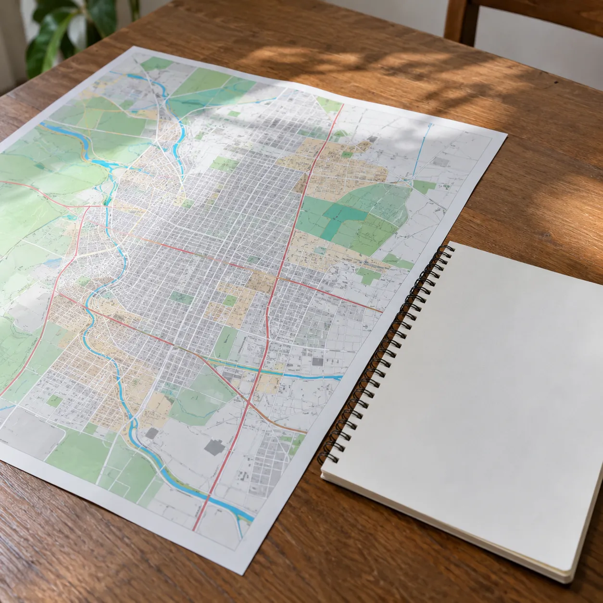

Art. 1°
Proyectos territoriales
Diagnóstico, planificación y propuestas para el desarrollo local, adecuados a la escala y la agenda de cada municipio.
- Relevamiento de las necesidades del distrito
- Propuestas por eje: obras, servicios, ambiente y empleo
- Fundamentos con datos públicos
- Documento para presentar la plataforma